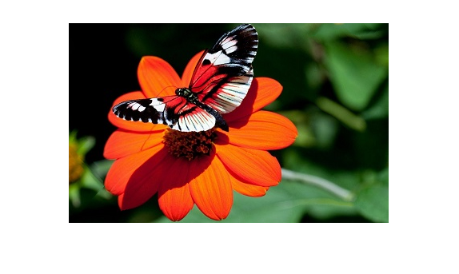
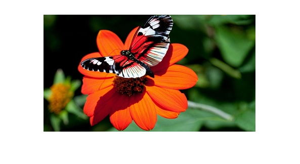
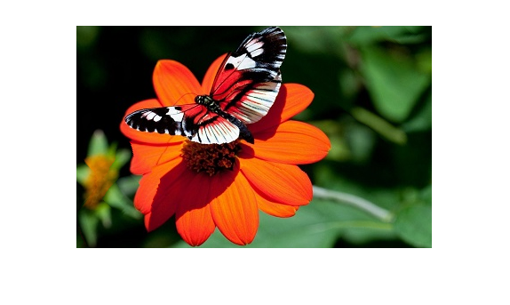
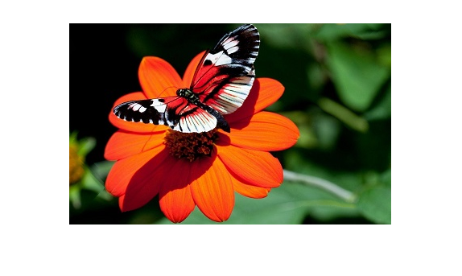
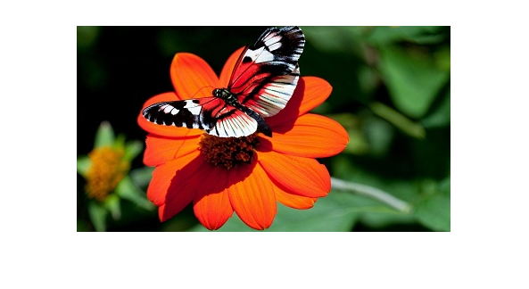
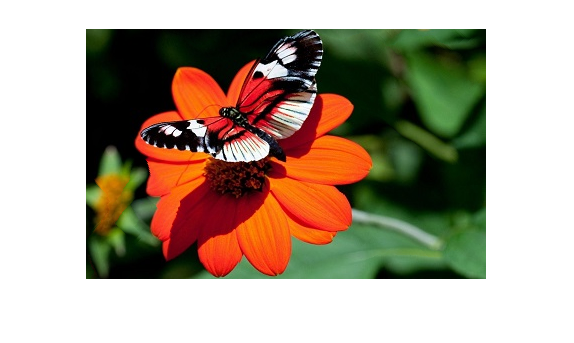
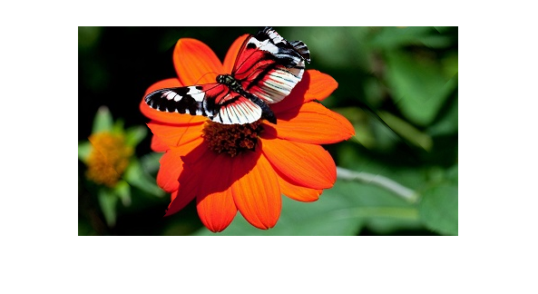
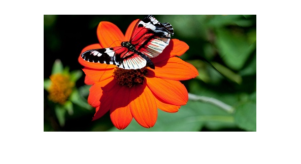
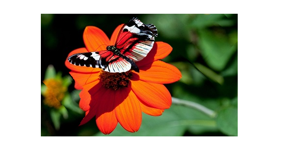
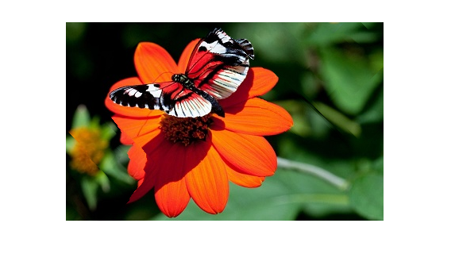

COL783: Assignment 3
Naman Jain (2020anz8848) and Siddharth Shrivastava (2020anz8849)
1 Objective
Resize the image using seams carving technique
2 Seam Removal
Flowchart in the Figure 1 process of removing the seam from an image. Same process is applicable for Vertical and Horizontal seam removal.
3 Seam Removal
Flowchart in the Figure 6 process of seam insertion in image. Same process is applicable for Vertical and Horizontal seam insertion.
4 Optimal Seam Carving
Flowchart in the Figure 11 process to get the optimal steps for resizing the image in both direction.
5 Object Removal
To remove an object, user need to provide/draw mask using free assisted ROI in matlab. User can also provide mask to preserve object in the image.
References
1Guo D, Sim T. Digital face makeup by example. In2009 IEEE Conference on Computer Vision and Pattern Recognition 2009 Jun 20 (pp. 73-79). IEEE.
2Winnemöller H, Kyprianidis JE, Olsen SC. Xdog: an extended difference-of-gaussians compendium including advanced image stylization. Computers & Graphics. 2012 Oct 1;36(6):740-53.
3Zhanpeng Zhang, Ping Luo, Chen Change Loy, Xiaoou Tang. Facial Landmark Detection by Deep Multi-task Learning, in Proceedings of European Conference on Computer Vision (ECCV), 2014
 Figure 2: Different Energy functions for an image
Figure 2: Different Energy functions for an image

 Figure 3: Result for Vertical Seam Carving
Figure 3: Result for Vertical Seam Carving 


Figure 12: Optimal resize with gradient energy function, original,optimal, alternate, hor_ver and ver_hor



Figure 12: Optimal resize with gradient energy function, original,optimal, alternate, hor_ver and ver_hor 
Figure 14: HoG and Entropy, sub_opt alternate seam removal

Figure 14: HoG and Entropy, sub_opt alternate seam removal 
Figure 15: HoG and Entropy, sub_opt with horizontal then vertical

Figure 15: HoG and Entropy, sub_opt with horizontal then vertical